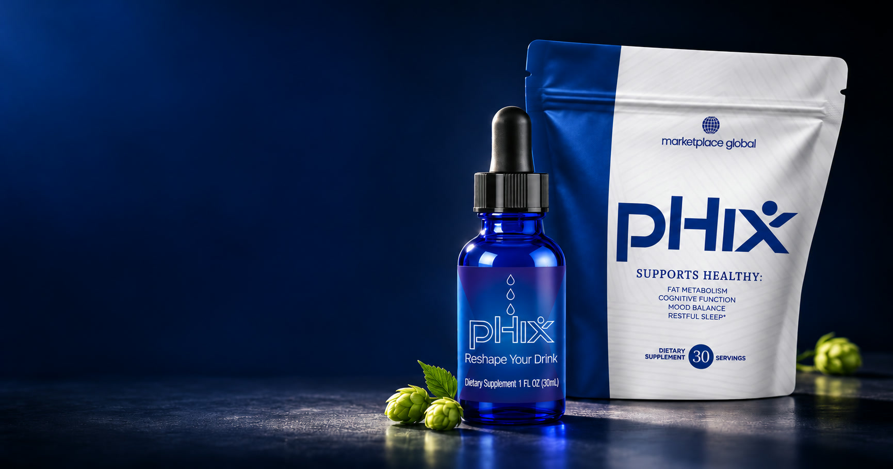
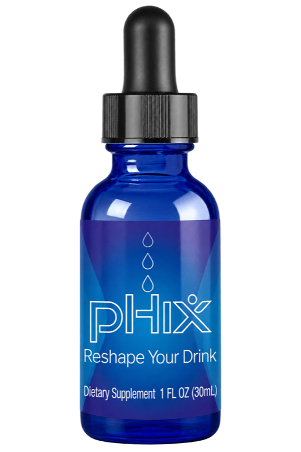
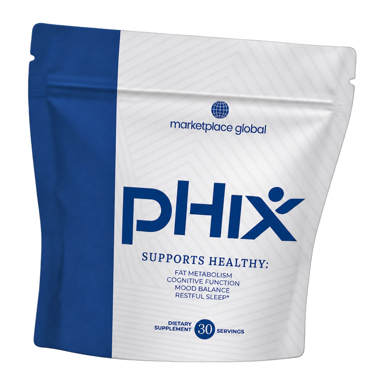
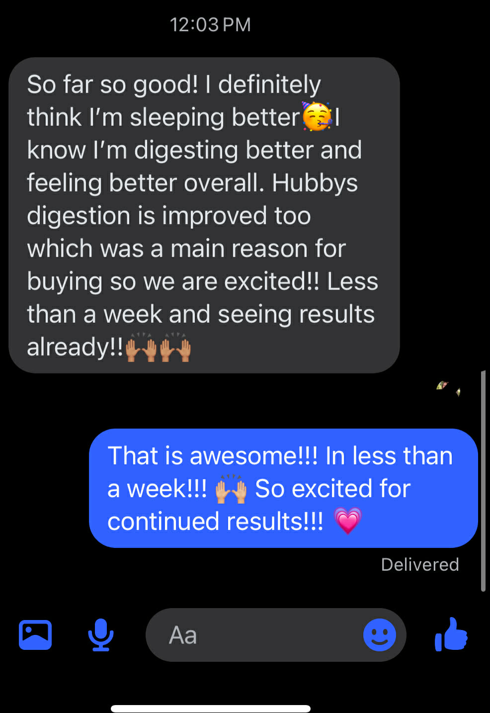
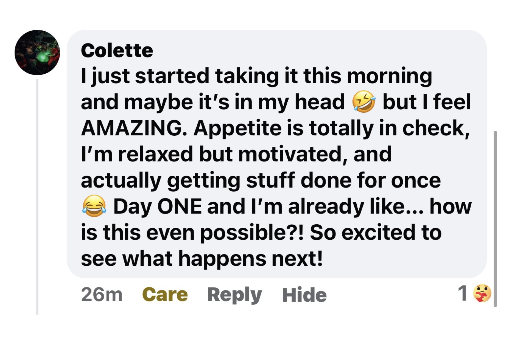
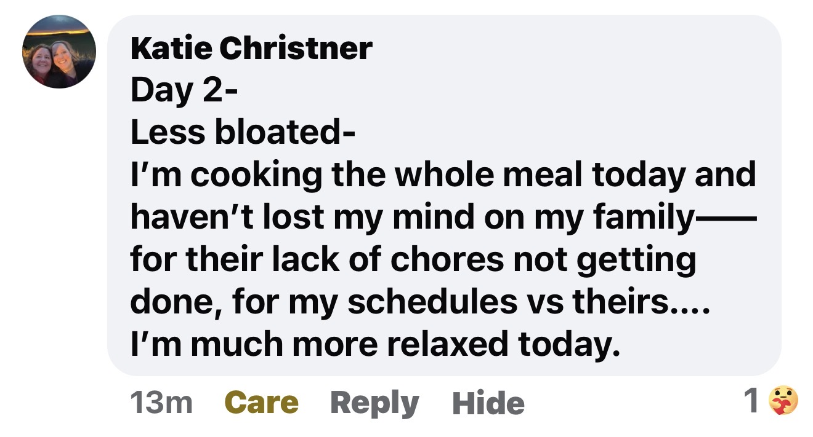
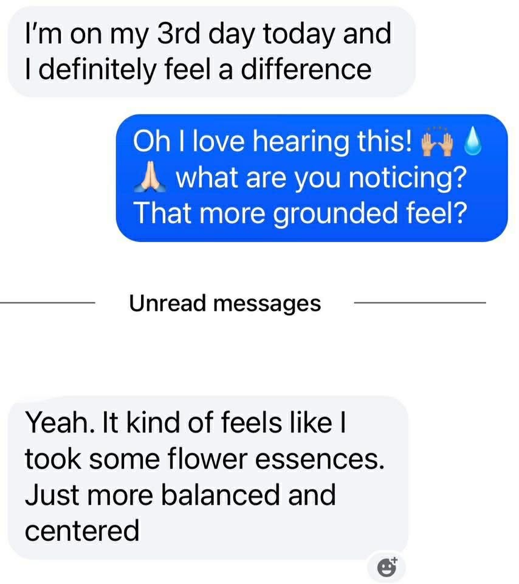
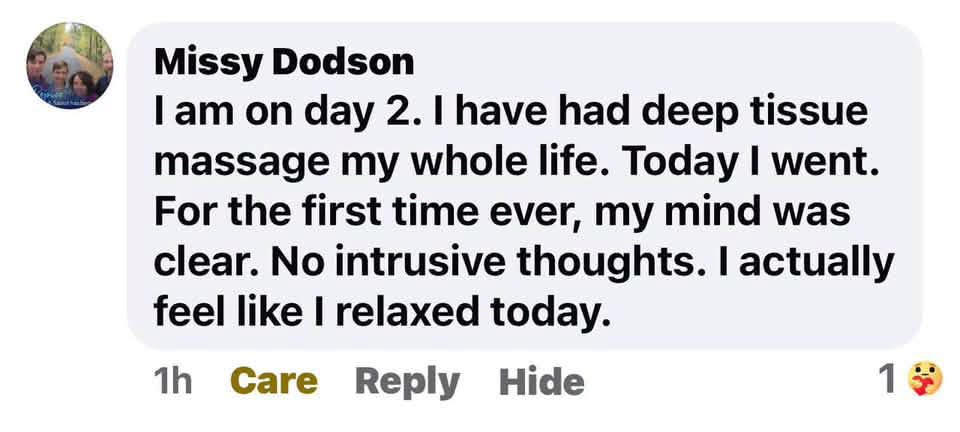

A stimulant-free approach to healthy body composition, cognitive function, and mood support.* Discover the science behind PHIX.

Start with the story. Then explore the studies, the plant, and the people making PHIX part of their day.
The plant → The research → Your routine
Choose the format that fits your day. Both make PHIX easy to add to a favorite beverage.

01 / The dropsShake well. Measure the label's serving with the dropper and mix it into your beverage.

02 / The SnapsFold. Snap. Squeeze. A single serving for a work bag, travel kit, or a busy day away from home.
PHIX is built around matured hop extract, not caffeine.
These are reports listed in an MPG presentation, not benefits established by PHIX clinical trials or a prediction of your results. Individual experiences vary. The published ingredient studies and their measured outcomes are explained separately.
I definitely think I'm sleeping better … feeling better overall.Shared personal message
I had so much energy but not like an over caffeinated stimulated energy, but like a “let's get it done” energy.Shared personal experience
I'm relaxed but motivated, and actually getting stuff done for once.Colette
I'm much more relaxed today.Katie Christner
Just more balanced and centered.Shared personal message
I actually feel like I relaxed today.Missy Dodson
Swipe for more
Selected personal experiences, not clinical findings or a prediction of typical results. Timing and outcomes vary. Quotes are excerpts.
It is not simply “more hops.” Researchers study a particular group of compounds formed as hop bitter acids mature.
Sensing. Signaling. Responding.
Nerve pathways, including the vagus nerve, help carry information between the gut and brain.
Illustrative pathway · Animal research
The extract group had a greater reduction in visceral fat at weeks 8 and 12, compared with placebo.
Selected verbal-fluency and Stroop-test measures improved, along with reported mental fatigue, compared with placebo.
A separate trial reported improvement in a divided-attention test in adults aged 45–69.
1 of 3
If using twice daily, MPG directs at least 9.5 hours between uses. PHIX is intended for adults, not children or pregnant or nursing women. Consult a healthcare professional about medications or a medical condition.
Text the person who shared this page with you. Ask about PHIX, the research, and how it could fit your routine.
I watched the PHIX story. Can you help me understand whether it fits my goals and how to get started?
Copied. Paste it into a text.
Independent team educational page · PHIX is a MarketPlace Global product, available exclusively through MarketPlace Global. *These statements have not been evaluated by the Food and Drug Administration. This product is not intended to diagnose, treat, cure, or prevent any disease. Ingredient research is not a clinical trial of the finished product. Individual results vary.
Follow your current label. Demonstrations show earlier packaging; the bottle clip is a 46-second excerpt.
Follow your current label. Demonstrations show earlier packaging.

From the shared Boards collection
From the shared Boards collection

From the shared Boards collection

From the shared Boards collection

From the shared Boards collection

From the shared Boards collection
Choose the format that fits your day. A dropper bottle for your counter. Individual Snaps for your bag. Both make PHIX easy to add to a favorite beverage.
Shake well. Measure the label's serving with the dropper and mix it into your beverage. The current US offer includes a bottle plus six Snaps.
Fold. Snap. Squeeze. A single-serving format that fits a work bag, travel kit, or a busy day away from home.
Use your current label for the serving amount and directions. Demonstrations show earlier packaging; the bottle clip is a 46-second excerpt.
What makes it worth your attention?PHIX is built around matured hop extract, not caffeine. The ingredient research asks how plant-derived compounds interact with pathways involved in body composition and the gut–brain connection.
For people working on their wellness beyond the scale. A controlled human ingredient trial measured reductions in abdominal visceral fat over 12 weeks.
For people who value staying engaged. Human trials of matured hop bitter acids reported improvements in selected attention-related test results.
For people interested in the mind–body connection. Researchers have also measured mood and mental-fatigue outcomes in healthy adults.
These are reasons to explore the ingredient, not promises of an identical personal result. Study preparations and doses are described in the research.
See what was measured Humulus lupulus · The hops flowerNature provides the starting material. Understanding what is inside changes the story.
It is not simply “more hops.” Researchers study a particular group of compounds formed as hop bitter acids mature.
Controlled oxidation changes some of the hop flower's original bitter acids into matured hop bitter acids, or MHBAs.
Published research describes water extraction and filtration to obtain an extract containing these matured compounds.
Researchers then examine defined preparations, amounts, and outcomes, from nerve signaling in animals to trials in people.
The 2016 paper describes matured hop bitter acids as having a more pleasant, milder bitterness than iso-alpha acids. Its research extract was produced by oxidizing hop pellets, followed by water extraction and purification. That paper documents its own preparation; it is not a manufacturing specification for PHIX.
Read the preparation method The gut–brain connectionSensing. Signaling. Responding.
The digestive tract contains receptors that sense compounds in what you consume. Nerve pathways, including the vagus nerve, help carry information between the gut and brain.
Animal studies have explored how matured hop bitter acids engage this communication network, with effects on memory-related pathways and energy use. That is the mechanism research behind the bigger question.
Illustrative pathway · Animal research.
Explore the gut–brain study Human ingredient trial · 2016 · Nutrition Journal200 adults randomized · 12 weeks · Body composition.
Researchers used CT scans to measure abdominal fat. Adults with a BMI of 25 to under 30 drank either a beverage containing matured hop extract or a matching placebo.
The result: the extract group had a greater reduction in visceral fat at weeks 8 and 12, and total abdominal fat at week 12, compared with placebo.
Randomized, double-blind, placebo-controlled trial. Daily test beverage: 35 mg matured hop bitter acids (MHBA). 200 participants randomized; 178 included in the per-protocol efficacy analysis. Kirin-affiliated researchers conducted the study. This was an ingredient beverage, not a clinical trial of finished PHIX.
Read the full 2016 study Human ingredient trial · 202060 adults · 12 weeks.
Over 12 weeks, selected verbal-fluency and Stroop-test measures improved, along with reported mental fatigue and anxiety-state measures, compared with placebo.
Healthy adults aged 45–64 who noticed cognitive changes; 35 mg MHBA daily. Outcomes differed by test and time point. The study had Kirin-affiliated authors. DOI: 10.1021/acs.jafc.9b06660.
Read the published abstract Human ingredient trial · 2020100 adults · 12 weeks.
A separate 12-week trial reported improvement in a divided-attention test in adults aged 45–69 who noticed changes in their cognition.
Randomized, double-blind, placebo-controlled; 35 mg MHBA daily. The individual divided-attention result reached statistical significance; an integrated analysis accounting for multiple tests did not. Some memory findings were subgroup results. Further replication matters. Kirin funded the research.
Read the full study The researchPHIX supplies 120 mg of matured hop extract per serving. That is the amount of the extract, not 120 mg of isolated MHBA. The studies used specified MHBA preparations; their doses should not be assumed equivalent to a PHIX serving.
Published research explores energy use and nerve activity in animals.
A controlled trial measures body composition over 12 weeks.
Human trials investigate attention, mood, and mental fatigue.
A timeline of matured-hop ingredient research, not the age of the PHIX brand.
Make the small things simpleFollow the serving directions on your label. 120 mg matured hop extract per serving; 1.2 mL per serving, plus purified water.
For the bottle, shake well and measure the serving with the dropper. For a Snap, fold, snap, and squeeze into your beverage. Follow your current label.
Make it easy to remember. The human ingredient trials followed daily use over weeks, not an immediate stimulant sensation.
Nutrition, movement, and sleep still matter. Track your own goals and experience over time.
If using twice daily, MPG directs at least 9.5 hours between uses. PHIX is intended for adults, not children or pregnant or nursing women. Consult a healthcare professional about medications or a medical condition.
Before you beginIts appeal is the combination of a stimulant-free formula, a hops-derived ingredient with human research, and a simple liquid routine. Consider it in the context of your body-composition and cognitive-wellness goals, the study details, and your own health needs.
PHIX is not a caffeine product. Some people describe personal changes in sleep, focus, or how they feel, while others may not notice an immediate sensation. The controlled ingredient studies measured outcomes over weeks. A sensation, or the lack of one, is not a clinical measurement.
No. PHIX is a liquid dietary supplement formulated with matured hop extract and purified water. Matured hop bitter acids are a particular group of compounds; different hops products can contain different constituents and amounts.
MPG describes PHIX as stimulant-free. The US ingredient listing names matured hop extract and purified water.
MPG includes restful sleep among PHIX's support areas. People in the Boards collection also discuss sleep experiences. The most directly documented controlled matured-hop studies reviewed here focus on body composition and selected cognitive or mood outcomes; ordinary hops sleep studies should not automatically be treated as PHIX trials.
Think of it as a wellness routine to evaluate, not a lifetime obligation. Follow the label and assess whether it fits your needs over time. Your healthcare professional can help with individual questions.
The current US listing says PHIX is not intended for children or pregnant or lactating women. If you take medication or have a medical condition, speak with your healthcare professional before use.
Use the current MPG product listing for directions and warnings. The research papers are linked in the science section of this page.
Official MPG product information